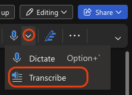

IART. Interactive Realities · FME1.IART1 Year 1 · Block B · 5 ECTS BUas · Creative Business · 2026–2027
Code your interviews
Find five themes in your interview transcripts, then bring them to class.
Your task
Read each transcript and mark where your participant talks about NEEDS, GOALS, MOTIVATIONS, BEHAVIOUR and CONTEXT. You do this alone. In class, your team pools what you found.
!
Bring this to class
Your transcripts, coded: one colour per theme, and starred quotes marked.
English versions of your quotes if you interviewed in Dutch: every quote you will write on a sticky note.
A reference for every quote: participant and timestamp, for example P3, 04:32.
No coded transcript and no translated quotes means no sticky notes. Start early.
code one transcript, take a break, then the next ↺
1This is research
An interview is not just a chat. It is applied research.
Applied research collects evidence to solve a real problem for real people (Bickman & Rog, 2008). Your problem: how to improve the experience of BUas students through an app.
What makes it research, and not a conversation, is that it is systematic:
Planned: you decide in advance what you want to find out.
Recorded: you ask comparable questions, get consent and keep transcripts.
Traceable: every conclusion can be followed back to a quote (Fereday & Muir-Cochrane, 2006).
Anyone can have a conversation. A researcher can show how they got from what people said to what they decided. Coding is how you show it. That is why your process report asks for interview protocols, consent forms and transcripts.
2Deductive coding now, thematic analysis later
There is more than one way to analyse interviews. In this project you start with the simplest, and climb one step at a time.
Now, alone
Deductive coding
We give you the themes. You look for them in your transcript.
In class, together
Clustering
Your team groups the coded quotes and sees which patterns appear. This is where you start finding themes nobody gave you.
Later in your studies
Thematic analysis
You build the themes yourself from the data (Braun & Clarke, 2006).
Think of the five themes as training wheels. Researchers often combine themes they start with and themes that emerge from the data (Fereday & Muir-Cochrane, 2006).
3Prepare your transcript
Your phone is your recorder. Word turns the audio into a transcript. Save everything in OneDrive, the school’s official tool.
Get consent first.Download the consent form from Brightspace. Your participant signs it before you press record. If your participant speaks Dutch, check that they understand the form.
Record.Use your phone’s voice recorder, in a quiet room, with the phone between you.
Save the audio to OneDrive.Recordings and transcripts are stored and transcribed through Microsoft OneDrive and Word.
Transcribe in Word (on a PC or on the web, not the Mac app).The Transcribe function, found under Dictate, only works in Word for Windows or in Word on the web. It is not available in the Word app for Mac. If you use a Mac, go to word.cloud.microsoft and log in with your BUas account, then open a blank document. On Windows you can use the Word app or the web version, also with your BUas account. Go to Home > click the small arrow next to Dictate > Transcribe. Choose the language of the interview, then Upload audio and pick your file (.wav, .mp4, .m4a or .mp3). Phone recordings need to be on your computer first, for example by AirDrop or email. It takes a few minutes. Microsoft currently allows 300 minutes of uploaded audio per month.

Screenshot to add: the Dictate button and its small arrow
Click the small arrow next to Dictate, then Transcribe.
Rename the speakers.In the Transcribe pane, change “Speaker 1” and “Speaker 2” to Interviewer and P1, P2… (use the pencil icon and tick “Change all”).
Add the transcript to your document.Use Add all to document. It is added as plain text, with a link to the audio. Your references are timestamps: P3, 04:32. If the timestamps do not appear in your document, copy them from the Transcribe pane, where you can click a timestamp to hear that moment.
Check it against the audio.Listen and correct every mistake, including names and Dutch words. This is also your first full read of your data.
Anonymise.Remove names and details that identify the person. Save the file with a clear name, for example Interview_Transcript1_YourName.
!
Interviewing in Dutch?
Transcribe in Dutch and code the Dutch original. You then translate only the quotes you will use. See Before you come to class.
record one minute first and test the whole route
4The five themes
You are looking for five things. Each has one colour and one letter. Coding on paper? Match your highlighters to these colours and write the letter in the margin (N, G, M, B, C), so colour is never your only signal.
Same topic, five themes
Topic: studying on campus.
Theme
What a participant might say
Need
“I can’t study at home, I need somewhere silent.”
Goal
“I want to finish my assignment before Friday.”
Motivation
“I don’t want to fall behind, my parents pay for this.”
Behaviour
“I walk around the library until I find a free seat.”
Context
“In exam week the library is packed after 10am.”
N
Needs
What must be in place?
Something the person must have or be able to do. Without it they are stuck, struggling or at risk. It is essential, not just nice to have.
Look for
Essentials: “I have to…”, “I can’t… without…”, “it’s essential that…”
Consequences: “otherwise I fall behind”, “then I can’t…”
Test
If this were missing, would the person be blocked or seriously worse off, or just a bit annoyed? If only annoyed, it is a preference, not a need.
Not to be confused with
Goal: what they want to achieve. A need is what has to be in place to get there.
Motivation: why they care. A need is what is required.
G
Goals
What do they want to achieve?
What the person is trying to achieve or get done in this part of their life. It is an outcome they are working towards.
Look for
Intentions: “I want to…”, “I’m trying to…”, “my plan is to…”
Outcomes: “so that I can…”, “I’d like to be able to…”
Optional label
Practical (a task): “find a quiet room before my exam”
Social (relationships): “meet people from other programmes”
Emotional (a feeling): “feel confident I’m on track”
Test
Can you finish the sentence “They want to achieve…”? If yes, it is a goal.
Not to be confused with
Need: a goal is what they want to achieve, a need is what must be in place to get there.
Motivation: a goal is the what, a motivation is the why.
Behaviour: a goal is what they are aiming for, behaviour is what they do.
M
Motivations
Why do they do it?
Why the person does something or wants something. It is the reason or feeling behind their choices and actions.
Look for
Reasons: “because…”, “that’s why I…”, “the reason is…”
Feelings that drive action: “I get stressed when…”, “I love it when…”, “I’m afraid of missing out”
Pressures and rewards: “I have to for my grade”, “it feels good to…”
Optional label
Intrinsic (from inside): interest, enjoyment. “I just like meeting new people.”
Extrinsic (from outside): rewards, pressure. “I only go because attendance counts.”
Test
Does the quote answer “why?” If it explains the reason behind a goal, a need or a behaviour, it is a motivation.
Not to be confused with
Goal: the goal is what they want to achieve, the motivation is why they want it.
Need: the need is what is required, the motivation is the reason they care.
Behaviour: behaviour is what they do, the motivation is what drives them to do it.
B
Behaviour
What do they actually do?
What the person actually does: their actions, habits and routines in this part of their life, including how they cope when things go wrong.
Look for
Actions: “I usually…”, “every day I…”, “last week I…”
Routines: “I always…”, “first I…, then I…”
Optional label
Habit or routine: “I check the timetable on my phone on the train.”
Pain point (where they struggle): “I walk around the building looking for a free room.”
Workaround (their own fix): “I message friends to ask if their room is free.”
Test
Could you film it? If the quote describes something a person does, it is behaviour.
Not to be confused with
Goal: the goal is what they are aiming for, behaviour is what they do about it.
Motivation: the motivation is why they act, behaviour is the action itself.
Context: context is the setting around the action, behaviour is the action.
C
Context
Where, who with, when?
The situation around the person: where they are, who is there and when it happens. It is the setting in which their actions and feelings take place.
Look for
Places and conditions: “at home”, “on the train”, “in the noisy canteen”, “with bad WiFi”
People around them: “with my friends”, “alone”, “in front of the whole class”
Timing: “between classes”, “during exam week”, “late at night”, “in my first year”
Optional label
Physical: location, noise, device, connectivity
Social: alone or with others, public or private
Temporal: time of day, point in the semester, time pressure
Test
Does the quote answer “where, who with, or when?” If it describes the setting and not what the person does or wants, it is context.
Not to be confused with
Behaviour: “I study” is behaviour. “In the library, in exam week” is context.
Need: “I need silence” is a need. “The canteen is loud at lunch” is context.
Surprised, or nothing fits? Add a star.
A star is not a sixth theme. If a quote surprises you or fits none of the five, put a star next to it and do not force it into a theme. Starred quotes matter most in class: they are where your team finds patterns nobody asked about.
It is fine if one quote has two codes. Highlight each part separately.
5Worked example
Mila is a first-year student. Topic: studying on campus. Here is her transcript, fully coded. Hide the codes if you want to read it plain first.
Need
Goal
Motivation
Behaviour
Context
Star
00:04Interviewer
Walk me through the last time you needed to study on campus.
00:11Mila
Yesterday. I had a free hour between lectures, so I went to the library.
00:19Mila
It was already full, so I walked around for like ten minutes and ended up on the floor in the hallway.
00:31Mila
Honestly, I need somewhere quiet, otherwise I just end up scrolling on my phone.
00:40Mila
I wanted to finish my reading before Thursday’s lecture.
00:52Mila
I really don’t want to be the one who didn’t prepare. Everyone else seems so on top of things.
01:03Interviewer
How did that feel?
01:07Mila
Stressed. I’d love to have a place on campus that feels like mine.
01:18Mila
Funny thing, I actually study better in the canteen when it’s loud. Silence makes me sleepy.
How to read it
Time
Part of the quote
Code
Why
00:11
“had a free hour between lectures”
Context time
When it happened, not what she did.
00:11
“went to the library”
Behaviour
An action you could film.
00:19
“walked around for like ten minutes… on the floor in the hallway”
Behaviour pain point, workaround
What she did when things went wrong.
00:31
“I need somewhere quiet”
Need
Without it she cannot concentrate.
00:31
“end up scrolling on my phone”
Behaviour
An action.
00:40
“finish my reading before Thursday’s lecture”
Goal practical
The outcome she wants.
00:52
“don’t want to be the one who didn’t prepare”
Motivation extrinsic
The reason she cares: social pressure.
01:07
“have a place on campus that feels like mine”
Goal emotional
A feeling she wants: “I’d love to…”
01:18
“I actually study better in the canteen when it’s loud”
Star
Contradicts her need for quiet at 00:31.
At 00:31 one sentence has two codes. That is normal. At 01:18 the quote gets a star because it contradicts what Mila said earlier. Quotes like this are what your team will look at in class.
6Practice: code Jonas
Jonas is 20. Topic: lunch on campus. Different topic, same five themes. For each line, pick every theme that fits. A line can have more than one, or none. Add the star if it surprises you. Then press Check my answers.
Prefer paper? Print this guide, highlight the excerpt, then enter your choices here to check them.
00:03Interviewer
Tell me about the last time you had lunch on campus.
00:09Jonas
Tuesday. I went to the canteenat 12:30 and the queue went all the way to the radio studio.
00:21Jonas
I waited five minutes, gave up, and bought a sandwich from the vending machine.
00:33Jonas
I only have 45 minutes between classes, so I need food that’s fast.
00:44Jonas
I want to eat with my friends, but we never manage to find a table together.
00:58Jonas
I try to save money, so I bring lunch from home most days.
01:10Jonas
I just enjoy sitting down properly with a hot meal, it’s the best part of my day.
01:22Jonas
Weirdly, I never use the microwaves, even though I bring food. I feel awkward heating things up in front of everyone. Star
if you disagree with the key, write down why
7Six hard cases
Real transcripts are messier than examples. These six situations come up again and again.
One quote, two codes
“I only have 45 minutes between classes, so I need food that’s fast.”
What to do: highlight each part in its own colour. “45 minutes between classes” is context and “need food that’s fast” is a need. Do not choose one.
A quote that fits none, or surprises you
“I actually study better in the canteen when it’s loud.”
What to do: do not force it into a theme. Put a star next to it. Starred quotes go to class, where your team decides what they mean.
“I need” said casually
“I need a coffee.”
What to do: code by meaning, not by keyword. Ask: if this were missing, would the person be blocked, or just annoyed? If only annoyed, it is a preference, not a need. The reverse also happens: real needs often come without the word “need” (“There’s nowhere to sit, so I stand in the hallway”).
A solution disguised as a goal
“I want an app that shows free tables.”
What to do: this is a feature idea, not a goal. Find the goal underneath (“find a table with my friends”) and code that. Write the idea down on the side for the Ideate phase.
An opinion, not behaviour
“The canteen is too crowded.”
What to do: it describes the setting, so it is context. If the person adds what they do about it (“so I eat at my desk”), that part is behaviour.
A wish, not behaviour
“I want to go to the gym three times a week.” Goal an intention
“I go to the gym three days a week.” Behaviour but stated: a general claim
“Last week I went once, the week before not at all.” Behaviour actual: a specific episode
What to do: behaviour is what someone did. A wish is a goal. A general claim (“usually”, “always”) is behaviour, but look for a specific example to check it. People tend to say what they think you want to hear, remember imperfectly and rationalise (Nielsen, 2001). If the example contradicts the claim, add a star. That gap is a finding.
8Before you come to class
!
Bring this to class
Your transcripts, coded, with starred quotes marked.
English versions of your quotes if you interviewed in Dutch.
A reference for every quote: participant and timestamp, for example P3, 04:32.
Interviewed in Dutch? Translate your quotes now
Code your Dutch transcript first. Then translate the quotes you will put on sticky notes. Your teammates need to read them, so the English version goes on the note.
Translate these quotes from Dutch to English. Keep the meaning and the tone. Don’t improve the grammar, don’t add anything, and tell me if an expression is an idiom that doesn’t translate directly.
Anonymise first. Only paste quotes without names or details that identify someone.
Use your BUas Claude account. Log in with your BUas credentials.
The translation is a first draft. If a teammate speaks Dutch, ask them to check your key quotes.
Mention it in your team’s AI statement.
No clustering yet
Grouping the findings happens together, in class. You will write them by hand on sticky notes. Your job now is to arrive with coded transcripts, translated quotes and references.
Self-check
All ticked. See you in class.
References
Bickman, L., & Rog, D. J. (Eds.). (2008). The SAGE handbook of applied social research methods (2nd ed.). SAGE Publications.
Fereday, J., & Muir-Cochrane, E. (2006). Demonstrating rigor using thematic analysis: A hybrid approach of inductive and deductive coding and theme development. International Journal of Qualitative Methods, 5(1), 80–92. https://doi.org/10.1177/160940690600500107
Want to go deeper? Braun and Clarke (2006) is optional reading. It is a dense academic paper, so read it when you are curious, not because you have to.